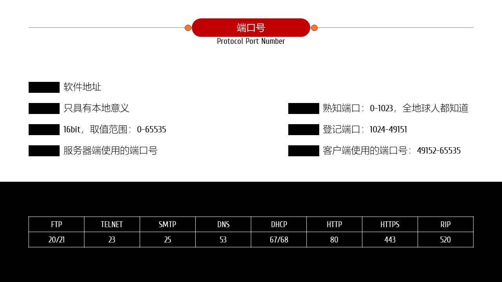

端口 port
- 概述
- 运输层以下各层的任务：解决主机到主机的通信；
- 运输层的任务：为应用进程提供端到端的服务；
- 计算机通信实际上应用进程之间的通信；
- 运输层使用[端口]来区别不同的应用进程；
- 根据业务需要，主要提供有：面向连接的TCP和无连接的UDP两种服务；

- 实操部分
- 网络拓扑

- 配置网络设备
- 1.配置WEB服务器：配置IP地址192.168.0.3；
- 2.配置DNS服务器：配置IP地址192.168.0.2；添加WEB服务器对应的域名信息；

- 3.配置主机：配置IP地址192.168.0.1；添加DNS服务器地址；

- 测试网络连通性
- 1.主机到WEB服务器的PING；[请补充测试结果]
- 2.主机到DNS服务器的PING；[请补充测试结果]
- 实时测试
- 打开主机的WEB浏览器；输入www.cnplaman.com，可以看到返回的WEB页面；

- 模拟测试
- 1.筛选协议

- 2.打开主机的WEB浏览器；输入www.cnplaman.com，单步测试数据报的发送过程；主要查看端口；
- 作业
- 1. 熟知端口分别有哪些？
- 2. 根据实操部分的内容，完成端口的测试；
- 3. 以纸质的形式提交实验报告；
- 4. 论文格式请参照范文[点击下载]。